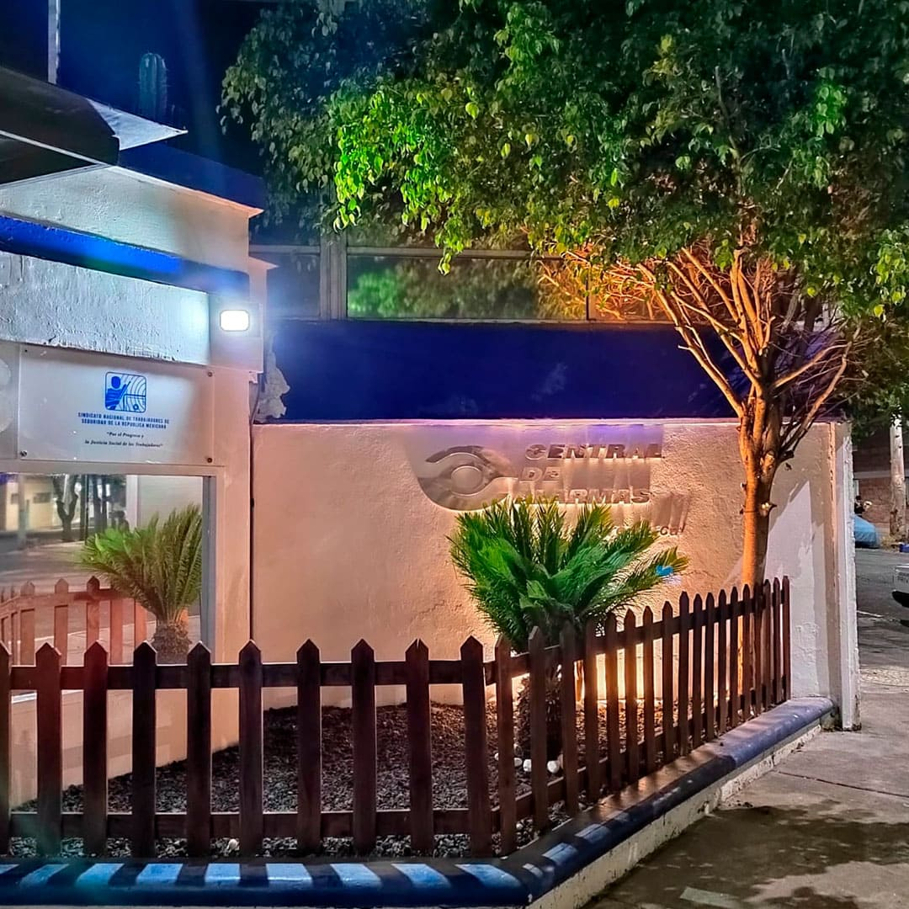

Agosto 2024 - Tiempo de lectura: 5 min.
Central de Alarmas, empresa mexicana enfocada en sistemas de seguridad
Orgullosamente es la primer empresa mexicana enfocada en sistemas de seguridad para hogares, PyMES y corporativos. Su historia comenzó en 1947 con el único objetivo de brindar seguridad a los mexicanos. A partir del 24 de enero de 1991 formamos
parte del Grupo de Seguridad Integral GSI.
Nuestra misión es cubrir las necesidades de cada uno de nuestros clientes sin importar si buscan el servicio para su hogar, pequeño o mediano negocio o una empresa. Ofrecemos servicios
rentables y de máxima calidad.
¿Qué hace una central de alarmas?
La central de alarmas es un lugar en donde trabajan personas capacitadas para analizar, dar seguimiento y gestionar las alarmas emitidas por un sistema de seguridad.
En Central de Alarmas, las funciones
que se llevan a cabo son:
1 - Recepción de señales.
2 - Análisis y clasificación.
3 - Validación.
4 - Respuesta y movilización de recursos.
5 - Seguimiento y comunicación.
6 - Registro y reporte.

Imagen ilustrativa
¿Cómo funciona una central de monitoreo de alarmas?
Cada empresa tiene una forma específica de trabajar. En el caso de Central de Alarmas, al recibir las señales, los monitoristas analizan la situación para clasificar dependiendo de si es una emergencia real, una prueba del sistema
o falsa alarma.
Una vez que se sabe qué tipo de emergencia es, se lleva a cabo una validación con el afectado. Si se trata de una situación real, se activa un protocolo de respuesta para enviar al personal correspondiente.
Ya que ha pasado la emergencia, se genera un reporte para analizar qué salió bien y qué no y así mejorar la eficacia de los servicios que ofrece.
¿Qué es operador de central de alarmas?
El operador de una central de alarmas se encarga de analizar e interpretar las señales emitidas para saber si es una situación real, una falsa alarma o una prueba del sistema. Cuando se trata de una emergencia verídica, los monitoristas
contactan a las autoridades correspondientes para actuar de manera oportuna.
Algunas empresas cuentan con su propio personal de vigilancia, que al activarse una alerta real, envían al personal a hacer una comprobación
presencial.
La ventaja principal de pagar un servicio de monitoreo es tener contacto directo con los monitoristas y por ende con las autoridades, que ayudan a proteger tu hogar, negocio o empresa ante una emergencia.